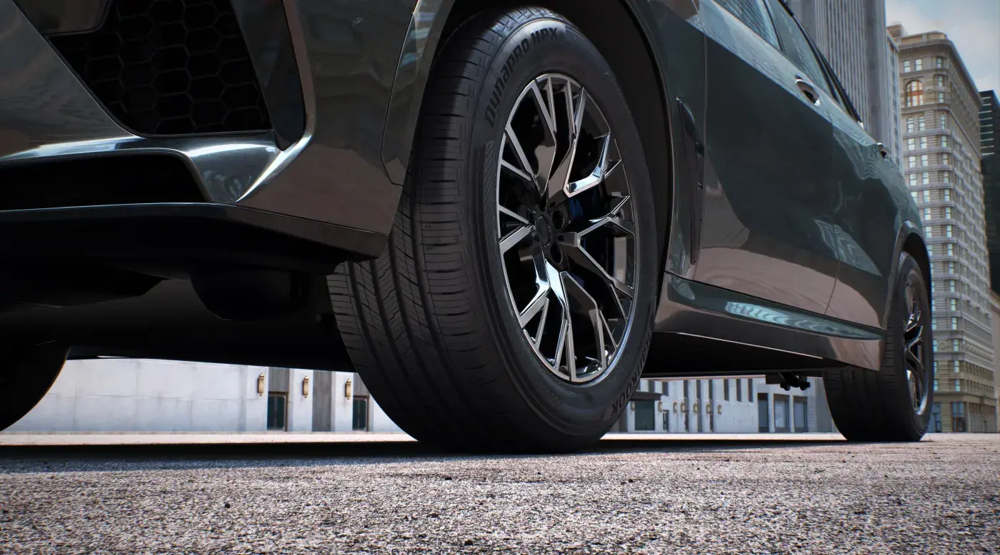
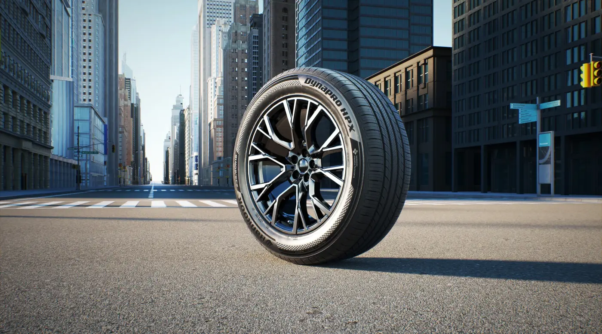
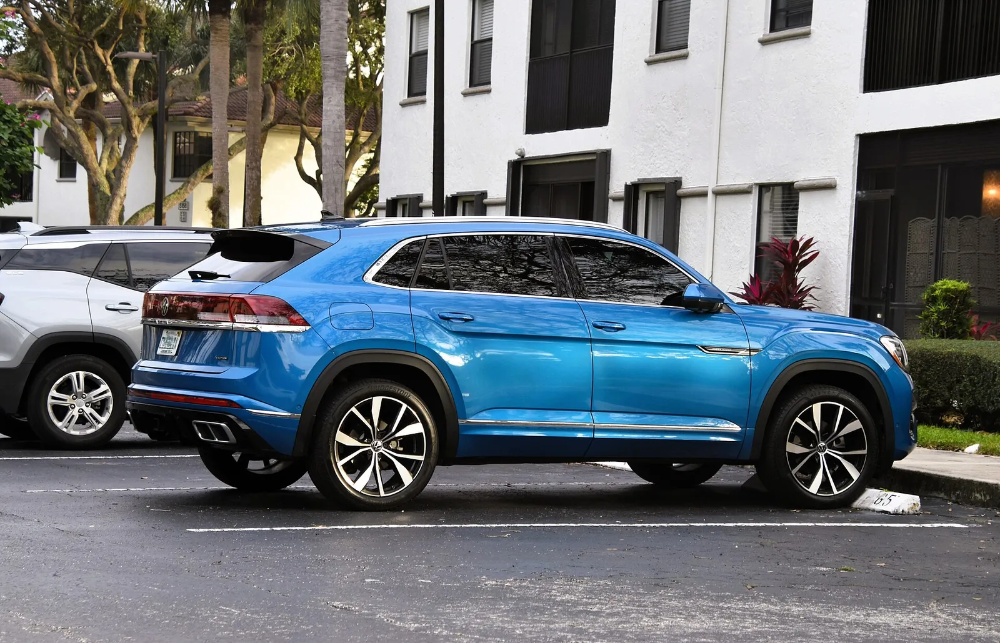
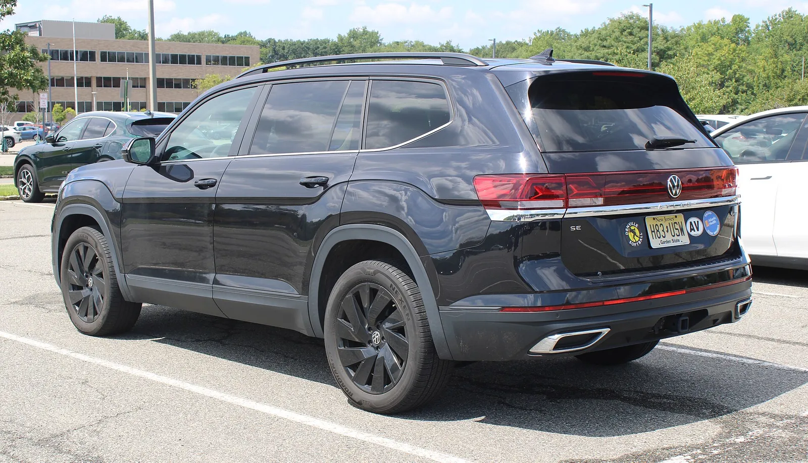
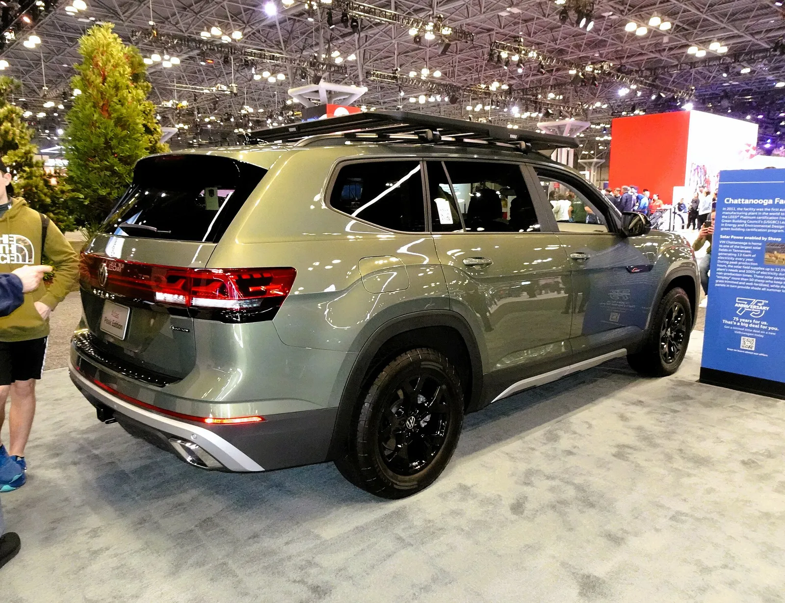
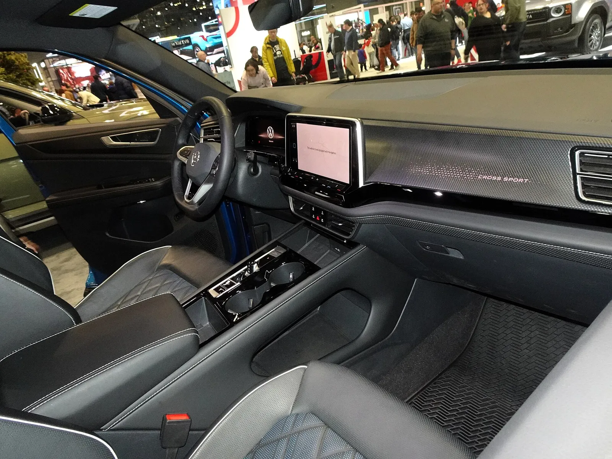

▲ 폭스바겐 아틀라스(사진은 2024년형 피크 에디션으로, 신형 2027년형이 아닌 이전 세대 페이스리프트 모델). 한국타이어 다이나프로 HPX는 북미 판매 아틀라스의 신차용 타이어가 된다 ⓒ Charles from Port Chester, Wikimedia Commons (CC BY 2.0)
1. 한국타이어, 폭스바겐 아틀라스의 '순정 신발'이 되다
한국타이어앤테크놀로지가 폭스바겐의 대형 SUV '아틀라스' 북미 판매 모델에 SUV 전용 프리미엄 컴포트 타이어 '다이나프로 HPX'를 신차용(OE) 타이어로 공급한다고 밝혔다. 공급 규격은 18·20·21인치 세 가지다. 한국타이어가 보도자료를 낸 것은 2026년 9월 28일로, 이데일리·머니투데이가 같은 날 보도했고 모터그래프는 29일 16시 56분 기사를 올려 30일 갱신했다. 한국타이어 공식 뉴스룸(미디어센터)에는 29일자로 게재됐다. 보도자료 제목은 '한국타이어, 폭스바겐 ‘아틀라스’ OE 공급…북미 SUV 포트폴리오 확대'다. 한국타이어는 장거리 주행이 잦은 북미 시장의 특성과 대형 SUV의 차체 특성에 맞춰 주행 안정성·내구성·정숙성을 앞세웠다고 설명했다. 이 소식은 모터그래프를 비롯해 헤럴드경제, 이데일리 등이 보도했으며, 모터그래프 원 기사와 한국타이어 공식 뉴스룸에서 발표 내용을 확인할 수 있다. 모터그래프 바로가기 한국타이어 뉴스룸 바로가기
다만 어떤 연식과 트림에 얼마나 많은 물량이 들어가는지, 공급이 정확히 언제부터 시작됐는지는 보도자료에 나와 있지 않다. 한국타이어는 보도자료에서 '북미 운전자들이 대형 SUV에 기대하는 주행 안정성과 내구성, 장거리 주행 환경에 적합한 성능을 구현했다'고 밝혔다. 이 글에서는 확인된 사실과 확인하지 못한 부분을 구분해 정리한다.
▲ 폭스바겐 아틀라스(사진은 2024년형 SE로, 신형 2027년형이 아닌 이전 세대 페이스리프트 모델). 북미 시장용 아틀라스는 미국 테네시 공장에서 만든다 ⓒ BuickRiviera99, Wikimedia Commons (CC BY-SA 4.0)
2. 이번 공급 내용, 확인된 것과 못 한 것
핵심은 '북미 판매 아틀라스'에 '다이나프로 HPX'를 18·20·21인치로 공급한다는 점이다. 발표 내용을 표로 정리하면 다음과 같다.
| 항목 | 내용 |
|---|---|
| 공급 타이어 | 다이나프로 HPX(SUV 전용 프리미엄 컴포트 올시즌 타이어) |
| 공급 규격 | 18·20·21인치 |
| 적용 차종 | 폭스바겐 아틀라스 북미 판매 모델 |
| 발표 시점 | 2026년 9월 28일 보도자료 배포(공식 뉴스룸 29일 게재, 매체별 28~30일 보도) |
| 제품 특성 | M+S(Mud+Snow) 표기, 마른·젖은 노면·눈길 대응(원문 기준) |
| 적용 연식·트림 | 확인 못 함(보도자료에 명시되지 않음) |
| 아틀라스 크로스 스포츠 적용 여부 | 확인 못 함 |
| 구체적 타이어 규격(폭·편평비) | 확인 못 함(원문은 인치 규격만 명시) |
| 공급 시작 시점·생산 공장 | 확인 못 함 |
정황상 이번 공급은 올가을 북미 판매점에 도착하는 2027년형 완전변경 아틀라스와 맞물려 있을 가능성이 있다. 폭스바겐이 7월 공개한 2027년형 가격표를 보면 SE는 18인치, SE 테크놀로지는 20인치, 최상위 SEL 프리미엄 R-Line은 21인치 휠을 쓰기 때문에 한국타이어가 밝힌 세 가지 인치 구성과 겹친다. 다만 이는 추정이다. 한국타이어는 '2027년형'이라고 직접 밝히지 않았고, 인치 구성이 겹친다는 사실만으로 연식을 특정할 수는 없다.

▲ 다이나프로 HPX. 이번 아틀라스 공급 제품과 같은 계열의 SUV 전용 컴포트 타이어로, 사진 속 차량은 아틀라스가 아니다 ⓒ 한국타이어앤테크놀로지
3. 다이나프로 HPX는 어떤 타이어
다이나프로 HPX는 사계절 내내 쓸 수 있는 SUV 전용 올시즌 투어링 타이어다. 한국타이어가 밝힌 주요 특징은 다음과 같다.
- 3D 그립컨트롤 사이프: 톱니 모양 블록이 서로 맞물려 움직임을 줄여 블록 강성과 접지력, 핸들링 성능을 높인다.
- 올시즌 컴파운드: 내마모 성능을 강화하고 접지면을 넓혀 마일리지를 개선했다.
- 소음 저감: 그루브 내부 널링(knurling) 기술과 멀티 피치 배열로 패턴 소음을 줄였다.
- M+S 표기: 마른 노면, 젖은 노면, 눈길 등 다양한 환경에서 쓸 수 있도록 설계됐다.
📍 미국 출시 당시 공개 수치(교체용 시장 기준)
한국타이어 미국법인은 2023년 11월 2일(현지) 라스베이거스 SEMA 현장에서 다이나프로 HPX를 처음 공개했고, SEMA Fest 2023(11월 3~4일) 부스에 전시했다. 판매 개시는 2024년 1월로, 16~22인치 39개 사이즈에 최고 속도 기호 V까지, 7만 마일(약 11만 km) 트레드웨어 제한 보증을 제시했다. 회사는 전작 대비 눈길 제동 4%, 젖은 노면 제동 15%, 젖은 노면 핸들링 7% 향상을, 자체 시험 기준으로 같은 마일리지 보증의 경쟁 타이어보다 트레드 수명이 최대 12% 길다고 주장했다. 이는 교체용 시장에 출시한 일반 제품 기준이고, 아틀라스에 공급되는 OE 사양이 동일한 수치를 내는지는 확인하지 못했다. 미국법인 보도자료 바로가기

▲ 다이나프로 HPX의 트레드와 사이드월(홍보 이미지로, 아틀라스 장착 사진이 아니다). 널링과 멀티 피치 배열은 도로 소음을 낮추는 설계 요소다 ⓒ 한국타이어앤테크놀로지
4. 아틀라스는 어떤 차, 어디서 만들어지나
아틀라스는 미국 시장을 위해 개발된 폭스바겐의 3열 대형 SUV이며, 미국 테네시주 채터누가 공장에서 생산된다. 2027년형 2세대 완전변경 아틀라스는 올여름 채터누가 공장에서 조립을 시작했고, 폭스바겐은 9월 30일 이를 기념하는 자료에서 10월 판매점 도착을 예고했다. 아틀라스와 아틀라스 크로스 스포츠를 합친 채터누가 누적 생산은 2016년 12월 이후 100만 대를 넘는다. 같은 공장의 전기차 ID.4는 폭스바겐 발표에 따라 2026년 4월 중순부터 조립이 중단돼, 공장 라인이 대형 SUV 중심으로 재편됐다.
| 항목 | 내용 |
|---|---|
| 파워트레인 | 2.0L 터보 4기통 282마력·258lb-ft, 8단 자동변속기(컨슈머리포트는 이전 세대 대비 13마력 증가로 소개) |
| 연비(EPA) | 전륜 복합 25mpg(시내 22·고속 29), 사륜 복합 23mpg(시내 20·고속 27), 기존 대비 2mpg 개선 |
| 좌석 | 7인승, 2열 3인 벤치 기본, 2열 캡틴 시트 선택 가능 |
| 생산 | 미국 테네시주 채터누가 공장(폭스바겐 9월 30일 발표) |
| 출시 | 2026년 10월 북미 판매점 도착 예정 |
트림별 휠 크기와 가격을 보면 한국타이어가 밝힌 18·20·21인치가 어디에 대응하는지 가늠할 수 있다. 가격은 폭스바겐 미국법인이 7월 공개한 2027년형 기준이며 목적지 요금(1,525달러)은 별도다.
| 트림 | 휠 | 시작 가격(전륜/사륜) | 한국타이어 발표 인치와의 관계 |
|---|---|---|---|
| SE | 18인치 머신드 알로이 | 41,610달러 / 43,610달러 | 18인치 구성과 일치(추정) |
| SE 테크놀로지 | 20인치 알로이 | 45,610달러 / 47,610달러 | 20인치 구성과 일치(추정) |
| SEL R-Line | 20인치(카스닷컴 보도, 폭스바겐 재게시본에는 미기재) | 사륜 기본 52,110달러 | 20인치로 보면 일치(추정) |
| SEL 프리미엄 R-Line | 21인치 | 사륜 기본 56,610달러 | 21인치 구성과 일치(추정) |
한국타이어가 트림별로 어떤 규격을 공급하는지는 밝히지 않았으므로 이 표의 '관계' 열은 어디까지나 독자의 이해를 돕기 위한 추정이다. 아틀라스 시리즈 가운데 쿠페형 파생 모델 '아틀라스 크로스 스포츠'는 2열 5인승 구성이며, 2027년형은 신형 아틀라스보다 늦은 2027년 초 미국 출시가 예정된 것으로 알려졌다. 변경 내용은 앞선 기사에서 다뤘다. 한국타이어가 이 크로스 스포츠에도 같은 타이어를 공급하는지는 확인하지 못했다.

▲ 아틀라스 크로스 스포츠 2024년형 SEL R-Line 측면(이전 세대 모델로, 신형 2027년형이 아니다). 대형 알로이 휠이 R-Line 상위 트림의 특징이다 ⓒ Charles from Port Chester, Wikimedia Commons (CC0)

▲ 아틀라스 후측면(2024년형 SE, 이전 세대). 신형 2027년형은 2.0L 터보가 282마력으로 강화된다 ⓒ BuickRiviera99, Wikimedia Commons (CC BY-SA 4.0)

▲ 아틀라스 2024년형 피크 에디션 후측면(이전 세대 페이스리프트 모델로, 신형 2027년형이 아니다) ⓒ Charles from Port Chester, Wikimedia Commons (CC BY 2.0)

▲ 아틀라스 크로스 스포츠 2024년형 실내(이전 세대). 대시보드 우측에 'CROSS SPORT' 문구가 보인다 ⓒ Charles from Port Chester, Wikimedia Commons (CC BY 2.0)

▲ 폭스바겐 테네시 채터누가 조립공장. 아틀라스가 만들어지는 곳이다 ⓒ 폭스바겐그룹
5. 한국타이어의 폭스바겐 OE 포트폴리오
한국타이어는 보도자료에서 폭스바겐 브랜드의 40여 개 차종에 신차용 타이어를 공급하고 있다고 밝혔다. 같은 보도자료는 '폭스바겐그룹 산하 주요 브랜드의 핵심 차종을 아우르는 포트폴리오'라고도 적어, 40여 개가 폭스바겐 브랜드만을 센 것인지 그룹 전체인지는 문구만으로는 명확하지 않다. 아틀라스 외에 원문이 직접 언급한 차종은 폭스바겐 '타이론'과 '티구안', 고성능 브랜드 쿠프라의 '타바스칸'·'테라마르'·'본'·'라발'이다. 한국타이어가 만든 글로벌 브랜드 '라우펜'은 폭스바겐 '폴로'와 '골프 8', 스코다 '뉴 옥타비아', 세아트 '이비자'·'아로나'·'레온' 등에 들어간다.
| 브랜드 | 차종 | 타이어(제품명) |
|---|---|---|
| 폭스바겐 | 아틀라스(북미 판매 모델) | 다이나프로 HPX, 18·20·21인치(이번 발표) |
| 폭스바겐 | 티구안(3세대) | 벤투스 에보 SUV, 18~20인치 5개 규격(한국타이어 2025년 발표) |
| 폭스바겐 | 타이론 | 벤투스 에보 SUV, 18~20인치 5개 규격(한국타이어 2025년 11월 발표) |
| 쿠프라 | 타바스칸, 테라마르, 본, 라발 | 이번 보도자료에 제품명 미기재 |
| 폭스바겐 | 폴로, 골프 8 | 라우펜 |
| 스코다 | 뉴 옥타비아 | 라우펜 |
| 세아트 | 이비자, 아로나, 레온 | 라우펜 |
표에서 눈여겨볼 대목은 같은 SUV라도 시장에 따라 타이어 성격이 다르다는 점이다. 한국타이어가 2025년 발표한 티구안·타이론용 '벤투스 에보 SUV'는 SUV 전용 초고성능 타이어로, 타이론용은 폭스바겐 오리지널 심볼 마크 '+'를 받고 뉘르부르크링 노르트슐라이페 실차 테스트를 거쳤다고 한다. 반면 북미 아틀라스에는 장거리·사계절 주행에 맞춘 올시즌 컴포트 타이어 다이나프로 HPX가 선택됐다. 다만 아틀라스용 제품이 폭스바겐의 '+' 마크를 받았는지는 확인하지 못했다.
라우펜의 세아트 레온 공급은 별도 기사에서, 다이나프로의 북미 마케팅은 다른 기사에서 다뤘다. 이번 소식의 포인트는 유럽 중심이던 폭스바겐 OE 공급이 북미 대형 SUV 아틀라스까지 넓어졌다는 점이다. 한국타이어는 미국 테네시주 클락스빌에 현지 공장을 두고 있다. 다만 아틀라스용 OE가 이 공장에서 만들어지는지는 확인하지 못했다.
6. OE 타이어가 중요한 이유
OE 타이어는 완성차 제조사가 신차 생산 단계에서 직접 장착하는 '순정' 타이어로, 승차감·소음·연비·핸들링이 모두 이 타이어 기준으로 튜닝된다. 완성차 업체는 서스펜션 세팅과 주행 특성에 맞춰 장기간 시험한 뒤 공급사를 고르기 때문에, 선정 자체가 품질 인증으로 통한다. 대형 SUV는 차체가 무거워 타이어 하중 부담이 크고 북미 소비자는 장거리 주행이 잦아, 정숙성과 내구성이 더 중요한 평가 기준이 된다.
OE 장착은 교체 시장으로도 이어질 수 있다. 신차에 달려 나온 타이어를 같은 제품으로 갈아 끼우려는 소비자가 있기 때문이다. 다만 이번 공급이 한국타이어의 북미 교체 판매에 얼마나 영향을 줄지는 자료가 없어 추정할 수 없다.
✅ 한국타이어 아틀라스 OE 공급, 이것만은 확인하세요
· 북미 판매 아틀라스에 다이나프로 HPX를 18·20·21인치로 공급(2026년 9월 28일 보도자료)
· 3D 그립컨트롤 사이프, 널링·멀티 피치 소음 저감, M+S 표기가 특징
· 폭스바겐 브랜드 40여 개 차종에 OE를 공급 중
· 적용 연식·트림, 공급 시작 시점, 생산 공장은 확인 못 함
7. 아틀라스를 사거나 타는 독자가 궁금해할 점
이번 발표는 북미 판매 아틀라스에 한정돼 있어, 국내 독자가 당장 체감할 변화는 크지 않다. 그래도 미국에서 아틀라스를 구입하거나 렌터·직구 등으로 접할 독자를 위해 자주 나올 만한 질문을 정리했다.
| 질문 | 확인된 답 |
|---|---|
| 내 아틀라스에도 한국타이어가 달리나 | 한국타이어는 '북미 판매 모델'에 18·20·21인치로 공급한다고만 밝혔다. 연식·트림별 장착 여부는 확인 못 함. 신차 출고 시 사이드월 표기로 직접 확인하는 것이 가장 정확하다 |
| 교체용 다이나프로 HPX와 같은 타이어인가 | 확인 못 함. 교체용 제품은 16~22인치 39개 사이즈로 판매 중이고, OE 사양이 동일한지는 공개되지 않았다(OE 전용 사양은 일반 제품과 다를 수 있어 추정에 머문다) |
| 교체할 때 인치를 바꿔도 되나 | 휠을 바꾸지 않는 한 현재 휠 인치와 같은 규격을 쓰는 것이 기본이다. 정확한 규격은 사이드월과 운전석 도어 라벨 표기를 따르면 된다(일반 정비 원칙) |
| 성능 수치(제동 15% 향상 등)가 그대로 적용되나 | 한국타이어 미국법인이 교체용 제품 출시 때 낸 전작 대비 자체 수치다. 아틀라스 OE에 같은 값이 나온다고 볼 근거는 없다 |
국내 독자 관점에서 가장 현실적인 의미는 한국 타이어 업체의 OE 공급 폭이 유럽을 넘어 북미 대형 SUV로 넓어졌다는 점이다. 북미는 대형 SUV 비중이 높은 시장이라, 신차 출고 단계에서 브랜드 노출이 커진다는 점이 업계가 OE 계약을 중시하는 이유로 꼽힌다. 다만 실제 판매량 효과는 공개된 자료가 없어 추정할 수 없다.
8. 정리
한국타이어가 폭스바겐 아틀라스 북미 모델의 신차용 타이어 자리에 다이나프로 HPX를 올렸다. 18·20·21인치 규격과 올시즌 성능, 정숙성을 앞세웠고, 폭스바겐 브랜드 40여 개 차종이라는 공급 폭이 유럽에서 북미로 확장됐다. 어떤 연식·트림에 들어가는지, 크로스 스포츠에도 쓰이는지는 아직 공개되지 않았다. 10월 신형 아틀라스가 판매점에 도착하면 실제 장착 사양이 확인될 것이다.